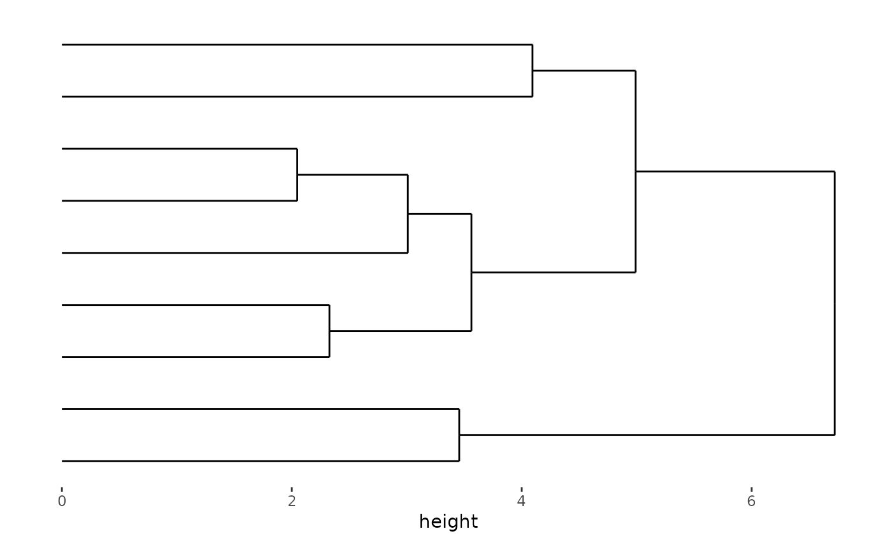
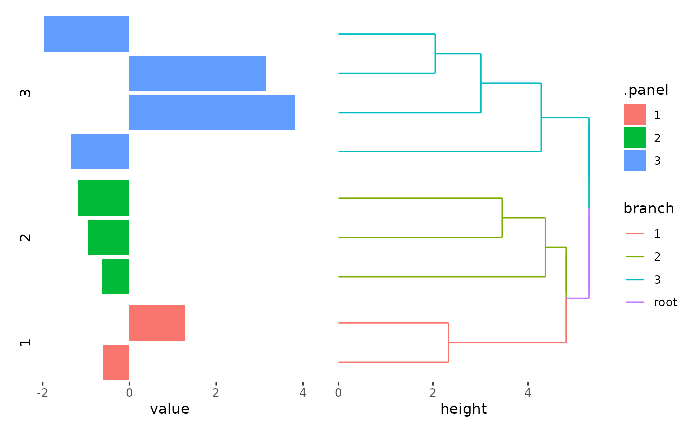
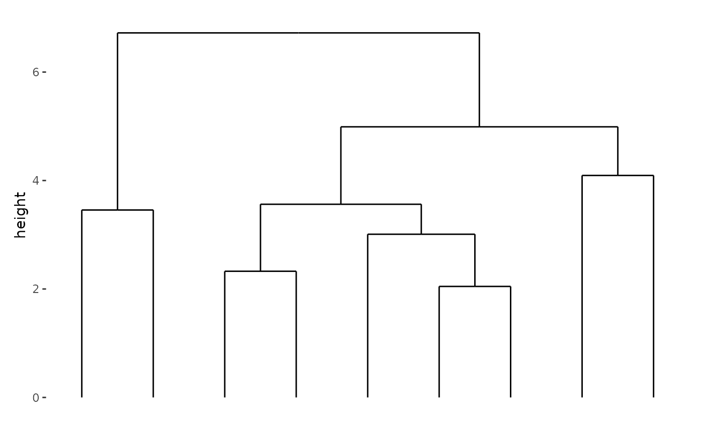
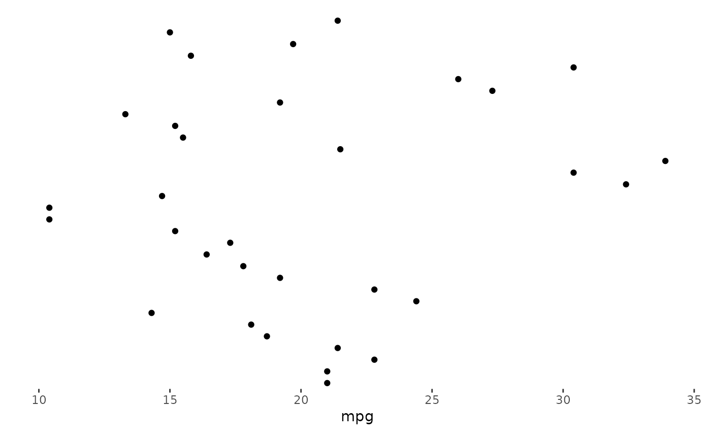

layout_stack() put plots horizontally or vertically. You
can also use the alias ggstack().
Input data
The data input can be a numeric or character vector, a matrix, and a data frame. Simple vector will be converted into a one column matrix.
set.seed(123)
small_mat <- matrix(rnorm(81), nrow = 9)
rownames(small_mat) <- paste0("row", seq_len(nrow(small_mat)))
colnames(small_mat) <- paste0("column", seq_len(ncol(small_mat)))By default, ggstack() will create the layout, but no
plot will be drawn until you add a plot element:
ggstack(small_mat)We can add any align_*() function to customize the
layout or integrate plots into the stack.
ggstack(small_mat) + align_dendro()
ggstack(small_mat) +
align_kmeans(centers = 3L) +
ggalign(rowSums) +
geom_bar(aes(value, fill = .panel), orientation = "y", stat = "identity") +
facet_grid(switch = "y") +
theme(strip.text = element_text()) +
align_dendro(aes(color = branch))
By default, ggstack() arranges the plots horizontally.
To change the direction to vertical, use the direction
argument:
ggstack(small_mat, "v") + align_dendro()
Unlike layout_heatmap()/ggheatmap(), data
frames are not automatically converted into a matrix within
ggstack().
When using data frames, be cautious as many align_*()
functions only accept matrices. If the necessary data is not explicitly
provided to an align_*() function, the data frame from
ggstack() will be passed to the function and internally
converted into a matrix, which may result in missing values.
An exception is the align_gg()/ggalign()
function, which can handle both matrix and data frames. When the input
is a matrix (or a simple vector), it is automatically transformed into a
long-format data frame. When the input is a data frame, only the
necessary panel and axis information is added to the data frame.
ggstack(mtcars) +
ggalign(mapping = aes(mpg)) +
geom_point()
Note align_gg()/ggalign() always applies a
default mapping for the parallel axes of the data index within the
layout. This mapping is aes(y = .data$.y) for horizontal
stack and aes(x = .data$.x) for vertical stack. So here we
only provide mapping for the x-axis, for the horizontal
stack, we default use the data index as the y-axis.
For more information on adding plots, refer to the vignette:
vignette("align-plot").
Heatmap plot
Besides the align_*() functions, we can also add the
layout_heatmap()/ggheatmap() into the stack
layout.
Session information
sessionInfo()
#> R version 4.4.1 (2024-06-14)
#> Platform: x86_64-pc-linux-gnu
#> Running under: Ubuntu 22.04.4 LTS
#>
#> Matrix products: default
#> BLAS: /usr/lib/x86_64-linux-gnu/openblas-pthread/libblas.so.3
#> LAPACK: /usr/lib/x86_64-linux-gnu/openblas-pthread/libopenblasp-r0.3.20.so; LAPACK version 3.10.0
#>
#> locale:
#> [1] LC_CTYPE=C.UTF-8 LC_NUMERIC=C LC_TIME=C.UTF-8
#> [4] LC_COLLATE=C.UTF-8 LC_MONETARY=C.UTF-8 LC_MESSAGES=C.UTF-8
#> [7] LC_PAPER=C.UTF-8 LC_NAME=C LC_ADDRESS=C
#> [10] LC_TELEPHONE=C LC_MEASUREMENT=C.UTF-8 LC_IDENTIFICATION=C
#>
#> time zone: UTC
#> tzcode source: system (glibc)
#>
#> attached base packages:
#> [1] stats graphics grDevices utils datasets methods base
#>
#> other attached packages:
#> [1] ggalign_0.0.4 ggplot2_3.5.1
#>
#> loaded via a namespace (and not attached):
#> [1] gtable_0.3.5 jsonlite_1.8.8 dplyr_1.1.4 compiler_4.4.1
#> [5] highr_0.11 tidyselect_1.2.1 tidyr_1.3.1 jquerylib_0.1.4
#> [9] systemfonts_1.1.0 scales_1.3.0 textshaping_0.4.0 ggh4x_0.2.8
#> [13] yaml_2.3.10 fastmap_1.2.0 R6_2.5.1 labeling_0.4.3
#> [17] generics_0.1.3 knitr_1.48 tibble_3.2.1 desc_1.4.3
#> [21] munsell_0.5.1 bslib_0.8.0 pillar_1.9.0 rlang_1.1.4
#> [25] utf8_1.2.4 cachem_1.1.0 xfun_0.47 fs_1.6.4
#> [29] sass_0.4.9 cli_3.6.3 pkgdown_2.1.1 withr_3.0.1
#> [33] magrittr_2.0.3 digest_0.6.37 grid_4.4.1 lifecycle_1.0.4
#> [37] vctrs_0.6.5 evaluate_1.0.0 glue_1.7.0 farver_2.1.2
#> [41] ragg_1.3.3 fansi_1.0.6 colorspace_2.1-1 purrr_1.0.2
#> [45] rmarkdown_2.28 tools_4.4.1 pkgconfig_2.0.3 htmltools_0.5.8.1